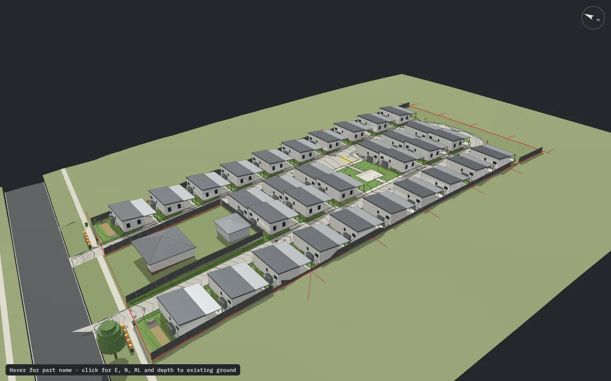
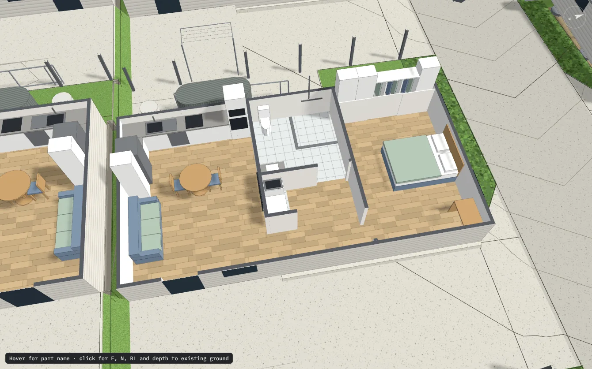
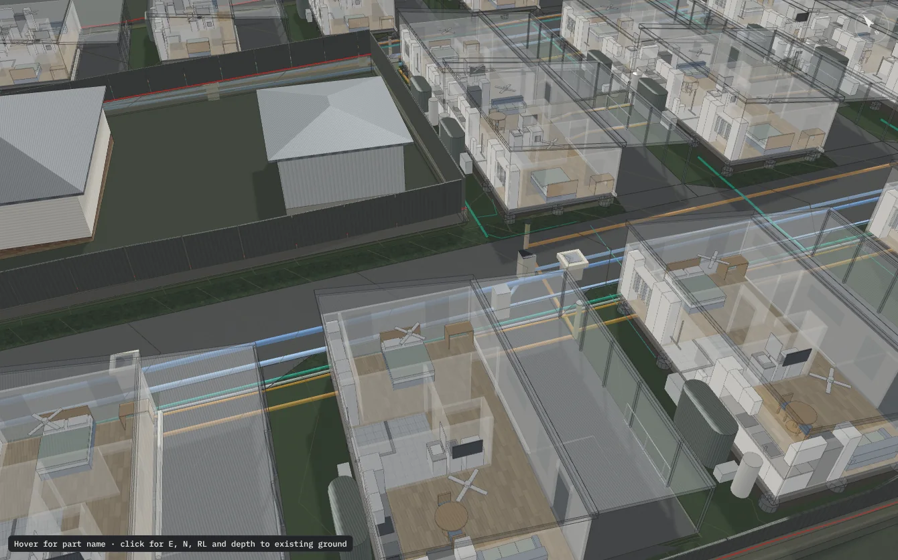

Stormwater Engineering
SMPs, OSD, DRAINS pit and pipe, MUSIC.
CIVIL & HYDRAULIC ENGINEERING FOR NSW
Stormwater, flood, access and infrastructure design for homes, developments and rural sites. Direct access to the principal engineer.
Written scope, fee and programme agreed before work begins. Fee proposals in 1 to 2 business days.
“Cost effective and innovative designs that have resulted in very positive wins for the client.”

PRINCIPAL ENGINEER
Director and Principal Civil Engineer
THE DELIVERABLE




01 / 04
INTERACTIVE MODEL
Orbit, zoom and inspect a 32-unit seniors living development, drawn from our civil design.
The model is a large file and only loads when you ask for it.
SERVICES
SMPs, OSD, DRAINS pit and pipe, MUSIC.
Flood impact assessments to ARR 2019 and the NSW FRM Manual, with floor level and flood immunity advice.
Drainage networks, culverts, channels, pump stations, rising mains and surge.
Reticulation, gravity and pressure sewer to WSA 07, and pump stations to WSAA and authority specs.
Turning paths to AS 2890 and Austroads, from cars to B-doubles.
Blue Book and council DCPs.
Flexible and rigid pavements to AGPT02, and industrial slabs.
AS 2870 classification, with slab and footing design coordinated with a structural engineer.
WHY JCE
1 to 2
days for fee proposals
3 to 5
business days for a typical house stormwater plan, after complete plans and survey
8+
years of engineering experience
8
engineering services
PROJECT SECTORS
SELECTED PROJECTS
AREAS
Tamworth, Gunnedah, Armidale, Moree, Narrabri, Boggabri, Quirindi, Werris Creek.
Coffs Harbour, Port Macquarie, Grafton, Macksville, Nambucca Heads, Urunga, Bellingen, Kempsey.
Metro, regional and rural. Travel is included in fee proposals.
GUIDES
FAQ
We are based in northern NSW and work across the New England North West, the Mid North Coast and the rest of the state. Metro, regional and rural sites are all fine, and travel is included in the fee proposal.
Often, yes. Councils commonly ask for stormwater plans, driveway designs, flood advice or erosion controls prepared by a qualified engineer. Send us your plans and we will tell you what your council is likely to require.
A stormwater plan shows how roof and site runoff is collected, treated and discharged, including pits, pipes, levels and any detention. It is drawn to your council's DCP and the relevant Australian Standards.
It depends on your council, the size of the site and the downstream drainage. Some councils require OSD for new dwellings and most do for multi-dwelling and commercial work. We confirm this against the DCP before we quote.
When a site is mapped as flood prone or a council flags it during assessment. The report sets floor levels, flood immunity and any impacts on neighbours, using ARR 2019 and the NSW Flood Risk Management Manual.
It checks that the vehicles you expect, from cars to B-doubles, can enter, turn and leave your site safely. It is drawn to AS 2890 and Austroads, and councils often request it for driveways, car parks and loading areas.
The site address and your current plans are usually enough to start. A survey, the council name and the type of approval you are after help us give a firm fee and programme.
Yes. Granny flats usually need a stormwater plan and sometimes OSD, a driveway design or site classification. We keep it simple and priced upfront.
Yes. Private certifiers and complying development certificates need the same engineering documents as a DA. We issue plans in the form your certifier needs.
Yes. Send us the RFI and the original plans. We review what was asked, respond with revised engineering and quote the work in writing first.
A typical house stormwater plan takes 3 to 5 business days after we have complete plans and survey. The programme is confirmed in the fee proposal.
You receive a written fee proposal before any work begins. It sets out scope, fee and programme, so there are no surprises.
CONTACT
Send the address and plans. You will have a written fee proposal in 1 to 2 business days.